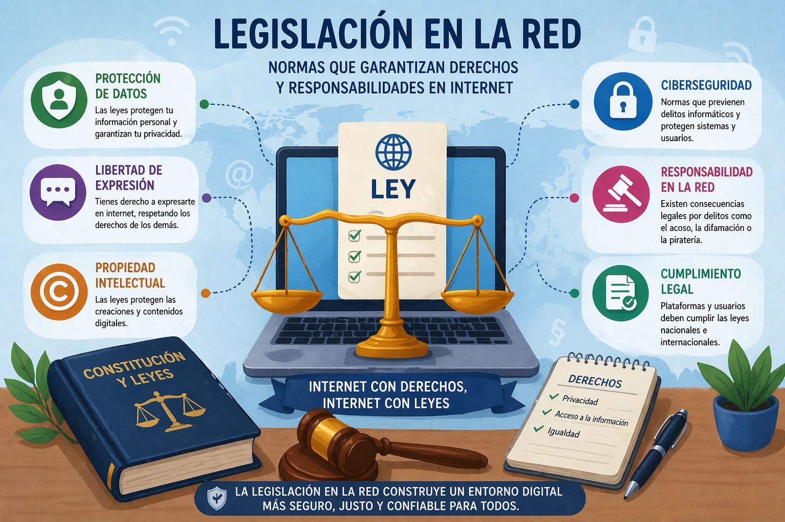

LEGISLACIÓN

Existen diferentes instrumentos jurídicos que regulan la actividad en Internet: Ley de Propiedad Intelectual (LPI), la Ley de Protección de Datos (LOPD) y la Ley de Servicios de la Sociedad de Información y del Comercio Electrónico (LSSI).
LEY DE PROPIEDAD INTELECTUAL (LPI): Es una ley que protege cualquier creación literaria, artística o científica. A su autor le corresponde la propiedad intelectual por el solo hecho de su creación, y se le atribuye la plena disposición de la obra y el derecho exclusivo de explotación. De acuerdo con esta ley, no se puede publicar ningún contenido que no sea propio sin consentimiento expreso del autor.
Licencias Creative Commons: Permiten al autor compartir libremente el contenido que ha creado. Las combinaciones de estos símbolos dan lugar a las diferentes licencias de Creative Commons que es posible utilizar en un contenido.
Copyright: es la forma en la que el autor de la obra conserva la propiedad intelectual y también los derechos exclusivos de copia y distribución de la misma.
Los derechos de propiedad intelectual, tanto el Copyright como las licencias Creative Commons, tienen una limitación en el tiempo que por lo general es la vida del autor más 75 años después de su muerte, aunque este plazo puede alterarse en determinadas circunstancias.
LEY DE PROTECCIÓN DE DATOS (LOPD): De acuerdo con la Constitución, las personas tienen derecho a que sus datos personales se protejan. La Ley de Protección de Datos surge para regular esta protección. Por eso, cada vez que se recogen los datos de una persona en una página web, un formulario escrito u otra vía, hay que aportar la siguiente información:
• Responsable. Nombre de la entidad que recoge los datos.
• Finalidades. Se indicará claramente para qué se utilizarán los datos.
• Legitimación. Se especifica la razón de la recogida. Por ejemplo, el consentimiento del interesado o la celebración de un contrato.
• Derechos. Se señalan los derechos que tiene el usuario: Acceso, rectificación, supresión, oposición y portabilidad.
Además de ampararse en el marco legal, cualquier persona se puede inscribir en el servicio Lista Robinson, desarrollado por el Gobierno. Permite evitar publicidad de empresas a las que no se ha dado consentimiento para ponerse en contacto con nosotros.
LEY DE SERVICIOS DE LA SOCIEDAD DE INFORMACIÓN Y DEL COMERCIO ELECTRÓNICO (LSSI): Es una ley creada para regular el régimen jurídico de los servicios relacionados con Internet y la contratación electrónica, cuando constituyan una actividad económica, directa o indirectamente